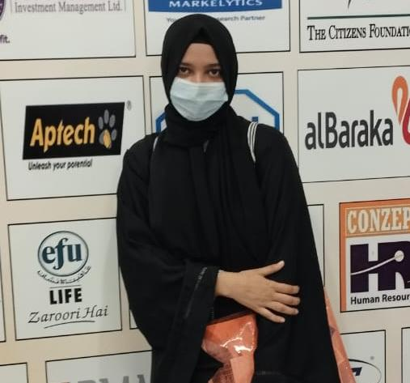
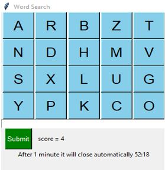
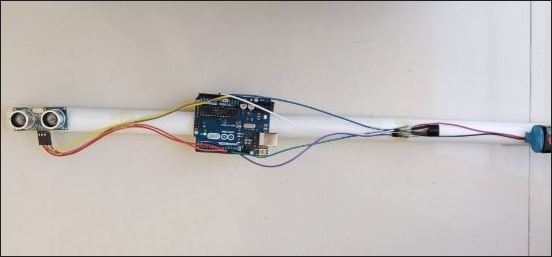

Welcome to Rabiya's Portfolio
Software Engineer
Dive into the creative world of Rabiya, where passion, skill, and
innovation converge.This portfolio showcases a curated selection
of my finest work, development, and creativity. Join me in exploring
the limitless possibilities of design and creativity

About Me
Software Engineer
I'm Rabiya Jawed, a software engineering 3 year student at Jinnah University for Women with a passion for coding and problem-solving. I'm on a continuous quest to learn and create innovative software solutions. My interests span various programming languages and web development technologies.I love collaborating with peers and exploring new technologies.
I'm also a strong believer in the importance of building a strong professional network.I actively engage in coding communities and forums to connect with fellow students, mentors, and industry professionals. Sharing knowledge and collaborating with others in the field is something I'm truly passionate about

SKILLS
I bring a diverse set of technical and soft skills to the table. I have a strong command of programming
languages Proficient in data structures and algorithms, I tackle complex problems with precision.
My familiarity with software development tools, version control systems, and database management
ensures a seamless development process. I excel in web development, with skills in both front-end
and back-end technologies.
TECHNICAL SKILLS
- Python - MERN
- JAVA - JavaScript
- HTML & CSS - MongoDB
- Php - MySql
PROJECTS
Word Search
The user will select letters and make word in a given space,
check whether the word is correct or not,if word is correct
then points will be given according to the length of word.
The user have only 1 minute. After 1 minute the window will
automatically disappear.

Blind Stick
Smart blind stick which helps blind people in walking.
It will beep if any obstacle come infront of individual.

Here I showcase two of my projects other projects you can see on my
github here is the link
https://github.com/RabiyaJawed

RESUME
I am pleased to attached my resume for your review and consideration.
I believe the skills and qualification outlined in my resume align well.
It encapsulates a comprehensive showcase of my work, highlighting
key projects. I appreciate your time in reviewing my resume.
CONTACT ME
03361280226
rabiyajawed12@gmail.com
linkedin.com/in/rabiya-jawed-1434a1246/